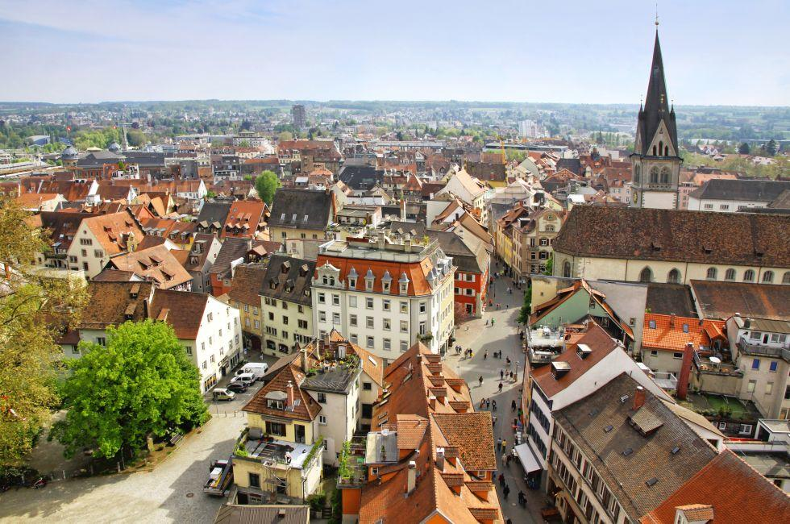
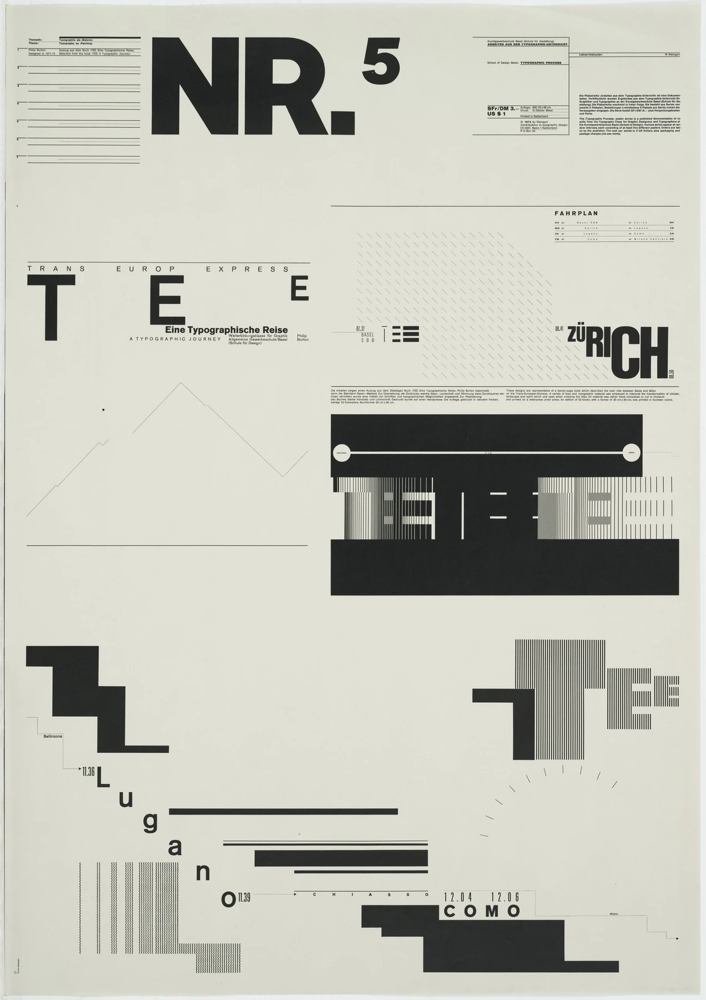
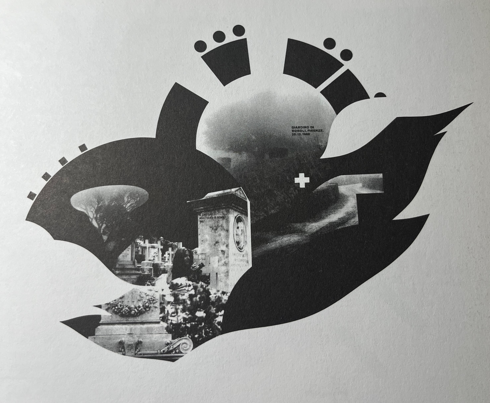
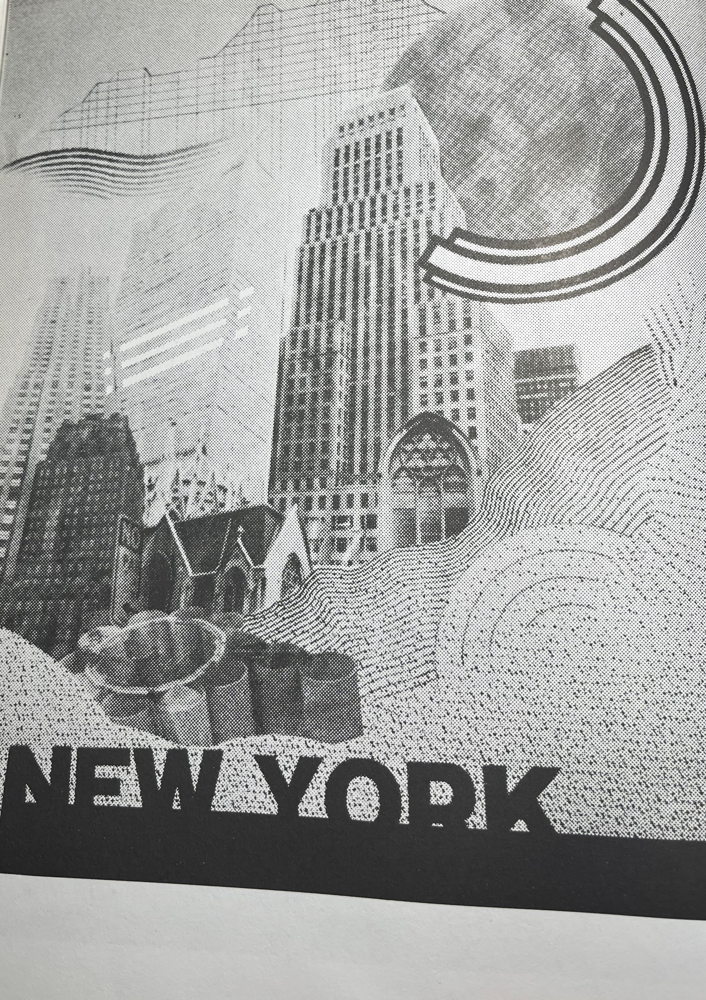

Wolfgang Weingart is one of the most famous typographers from the 20th century, who is known in the design world as a key antagonist to the New Wave
typography style. [Roberts, 2015]. Wolfgang is a very influential and celebrated typographer and elements from his inherent style are still used frequently even to
this day. He is known as a rebel in the Typography world and this is certainly true. In this essay I will be investigating how Wolfgang Weingart started a Typography
Anarchy with his New Wave typography style, which was his design style which led the breakthrough from what he seen as the legalistic and restrictive Swiss Style.
His work is something I’m a big fan of and something you will want to see.
Back
ground
As a way of background, he was born during World War II in 1941, in Konstanz, at the foot of the Alps. It is only a short journey away from Switzerland, which was
base point for graphic design in the 20th century, with some designers fleeing to there from Germany due to political altercations with the Nazi party.
[Ambrose and Harris, 2011]. For a short period of time Wolfgang and his family lived in Lisbon. In 1958, Wolfgang returned to his home country Germany and
attended the Merz Academy in Stuttgart, and studied Applied Graphic Arts, where he learnt different techniques such as linocut, woodblock-printing, and
typesetting. He then worked with Ruwe Printing, doing a 3-year apprenticeship, where he learnt typesetting in hot metal hand composition. This is where he met his
mentor, Karl-Auguste Hanke. Wolfgang said that “from the day we met, Hanke became my mentor” [Wolfgang, 2000] In 1963, Wolfgang relocated to Basel where he
attended the Basel school of Design, where he eventually became a teacher in. He met some massive design names, such as Armin Hofmann and Emil Ruder.
Fast forward to 2013, and Wolfgang had covered the world lecturing about typography, released books, and has a museum exhibition about him.
[Famous Graphic Designers, 2019].

Typographic Process Collection Nr.5
Wolfgang commonly used Lithograph in his work. Swiss style was the most popular typographic style when Wolfgang was around, so a lot of his work uses the
same mediums and techniques that were used in Swiss style, so they dabbed onto his work. He believes his work is a ‘natural progression’ of Swiss style, so there
are a lot of similarities between his style (New wave) and Swiss style. [Anon, 2003]. Wolfgang’s Typographic Process collection is one of his earliest collections
and is the foundation in which all his work is placed upon. I will be looking at Nr.5 in the collection. One of his most famous quotes was: ‘What’s the use of being
legible, when nothing inspires you to take notice of it?’ This ideology meant that text that wasn’t important or was simply for aesthetic purposes, didn’t have to be
syntactic. As you can see in his Typographic Process Collection Nr.5, there is a lot of text that isn’t syntactic and sometimes even chaotic, which was nothing
short of rebellious at a time when Typography was designed to be utilitarian and communicative, and nothing else. Wolfgang was creating new barriers and
pushing designers to let loose when creating typography. Wolfgang wanted Swiss style to be developed, but he didn’t know how. Although still very influential,
he thought it was a dead end. He wanted to breathe new life into typography. [Weingart, 2000]

A New Direction: Layering Lithography
In the 70s Wolfgang really started experimenting with superimposing, which is where one element is layered over another, but both are still visible.
To make this possible he made his own self-made screens using a darkroom, a reproduction camera, and trial and error. Lithographers were seldom designers,
and vice versa, but Wolfgang wanted to learn the skills and techniques of lithography so that he could have full control over the entire process of creating
these designs, from sketch to the final piece. [Wolfgang, 2000]. He began to realise the great number of unique effects that he could implement into his
designs when using reprographic cameras, which are the best cameras for reproducing copies of work, at the best possible quality.
[Notes on Reprographic Photography 2011, n.d.]. Some of these effects that he could create include: blur, distort, condense and cut it in to pieces,
which I think shows his creativity considering these were things that weren’t being done before. Here are a couple of his works in which you can see the
techniques of lithography being used:


Poster Swiss
The
The Swiss Poster
Offset lithography was also a big hit for Wolfgang, which was used for printing in mass production. Wolfgang used different techniques that were fresh
at the time to make his work unique, which although was looked down upon at the time, look timeless and modern to this day. One of these techniques was
layering shapes over images, and this creates a cool dynamic that adds depth to the piece. In his piece called ‘The Swiss Poster’, he uses an image of the
Matterhorn, which is a mountain in the Alps, and a depiction of the Switzerland flag, using the white cross. [Artifiche Swiss Poster Gallery, n.d.]. Wolfgang
also uses collaged layers of halftone film witch throughout the poster to create a dotty texture, also adding a cool distorted effect, which something he
commonly used in his designs. [Weingart, 2000]. Something that would have been driving designers crazy at the time was his lack of layout
and using grids. The text is arbitrarily laid out and doesn’t have a clear and tangible structure, which was heinous in the 20th century design world,
especially for typographers. Wolfgang uses the classic New Times Roman as his chosen typeface for the particular piece, and the poster also was released
with a variation of colours. Wolfgang was a ‘typographic rebel’, and this piece definitely proves it. [Schade, 2013]. I am a big fan.
Didacta Eurodidac
One design in particular I love from Wolfgang is this one: Didacta Eurodidac. In this poster he uses offset lithography with my eyes immediately
catching the fact that there is so much going on, and it is certainly not entirely clear what he wants us to be looking at, which was a fundamental
principle for Swiss Style, that the designer should be communicative to the viewer about their ideas. [Hollis, 2006]. I love how in this design there is
no space wasted, with the whole design being covered in interesting shapes, photographs, or typography. Another thing I noticed about Wolfgang’s
work is that he keeps the number of colours used to a minimum. In this poster he only uses different shades of black and white alongside yellow, orange
and red as secondary colours, which bring life to the piece. Something I especially enjoy about this design is the peculiar and unusual photographs that
are used in it. I don’t fully understand what the poster is representing, but I assume it is something to do with art school with the teacher, woman working,
paper and the protractor. Here is another case of Wolfgang rebelling against Swiss style, and pioneering a mighty movement that today is known as
‘New Wave’. [Heller, 2021]
Conclusion
Throughout this essay I have looked at Wolfgang Weingart, some of his designs and put forward evidence for him being responsible for the Typographic
anarchy which was the development of the New Wave style which was a progression of Swiss Style typography. [Heller, 2021] As seen in his work,
Wolfgang had no respect for restricting standards and rules that came with Swiss Style typography. This was revolutionary at the time, and it is no
surprise that he is still talked about today in the design industry. His ideology when it came to design is very interesting to me, he was able to let loose
and use random techniques when it came to layouts, letter spacing, typeface etc, but his designs still look mightily attractive and aesthetic.
Wolfgang Weingart was certainly the most influential typographic rebel. [Schade, 2013].